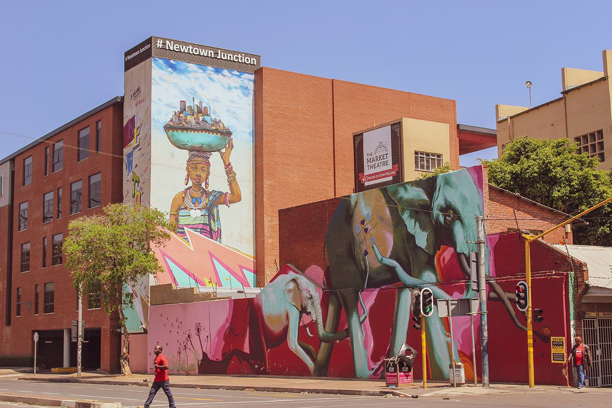
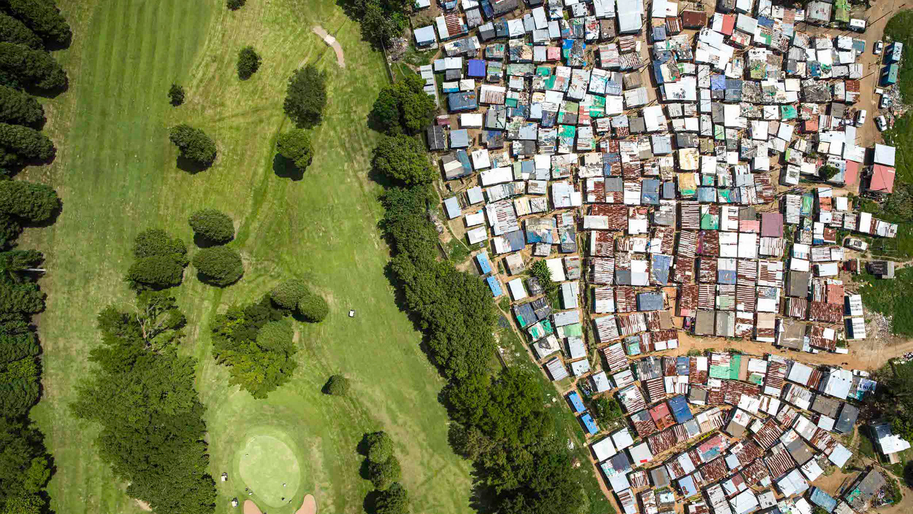

Soweto Towers An image of the decommisioned Orlando power station, captured during a lecture.
Soweto Towers is currently owned and managed by Nico Myburg who has 20 years of bungee and extreme sports experience. His motivation is introducing people to the world of adrenaline.
James Dladla photography: 2011

Graffiti in the city of gold. Photography of street art, a contentious topic in South Africa
Johannesburg’s street art scene is on the rise as more and more artists, both local and international, are flocking to the city to color the streets.
James Dladla photography: 2017

Unequal scenes. I captured the story of Alexandra and Sandton on camera, a story of the most stark sectionide of wealth in South Africa.
Less than a kilometer away from Sandton, across the M1 highway, sits the former township of Alexandra, an icon of apartheid-era urban planning, and former home to several famous struggle heroes including Nelson Mandela.